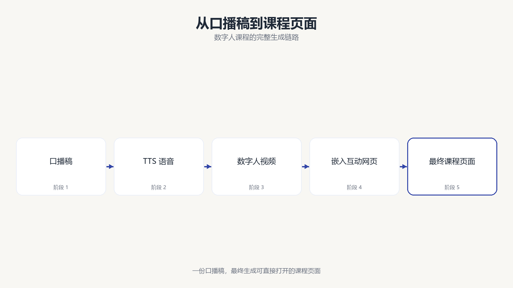
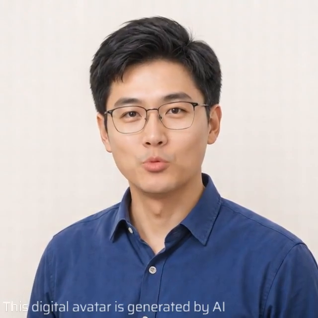
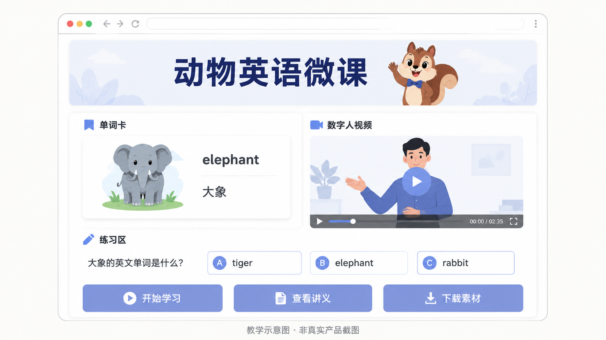

第 9 节
从口播稿到数字人和交互网页
本节目标
把文字、语音、数字人和网页整合成一个真正能展示的小作品。
建议时长：12 分钟
如果说上一节我们解决的是“让画面出现”，那这一节我们解决的，就是“让作品开口说话，而且能真正被使用”。这也是很多普通学习者对 AIGC 最有感的一步：原来一段文字，不仅可以变成口播稿，还可以进一步变成语音、变成数字人口播，再被嵌进一个可点击的网页里，形成一个有内容、有互动、有表现力的小作品。
flowchart LR
A[口播稿] --> B[TTS 生成语音]
B --> C[数字人口播视频]
C --> D[嵌入互动网页]
D --> E[形成最终微课页面]
先从口播稿说起。口播稿和普通文章不太一样，它要短句、清楚、容易说出口。比如面对小学生，句子就不能太长，也不能全是抽象概念。AI 在这里的一个很大优势，是它能先帮你起一个可用初稿。你再稍微修改几轮，就能得到一段比较自然的讲述文案。
接着是 TTS，也就是文字转语音。你可以把它想成“先让文字说起来”。这一步往往非常高效，尤其适合做课程试讲、短视频草稿或者产品演示配音。等语音确定之后，再把它送进数字人系统，给一个人物头像或半身形象去驱动，就会得到数字人口播视频。这样一来，即使暂时没有真人出镜，也能形成一个基础的讲解效果。
为什么我们专门拿一节来讲数字人？因为它已经不是"尝鲜玩具"，而是一个正在快速长大的真实产业。据艾媒咨询《2025 年中国数字人产业发展报告》的数据，2024 年中国数字人核心市场规模约为 339.2 亿元，预计 2025 年将增长到 480.6 亿元左右；而 IDC 的报告则显示，2024 年中国 AI 数字人这一细分市场规模约为 41.2 亿元，同比增长高达 85.3%（新华社等媒体亦有转载）。也就是说，无论是看整个数字人产业，还是只看"AI 驱动数字人"这一块，增速都非常快。这也解释了为什么现在连小公司、个人创作者都开始用数字人做口播——成本降下来了，质量也够用了（数据需核实，请以各家机构最新发布为准）。

最后一步，是把它重新放回网页里。因为我们这套课的贯穿项目，本来就要产出一个“动物英语微课”页面，所以最自然的做法，就是把数字人口播放进网页顶部或讲解区，让孩子先听一段引导，再去点击单词、练习答题。这样一来，图片、语音、视频和网页，就不再是四个分散成果，而是同一个项目里的不同部件。

这一节还要提醒大家一个很重要的现实问题：数字人、语音和视频往往更依赖具体服务状态，生成时间也更不稳定。所以在真正录课或做项目时，最稳妥的方式不是把全部希望都压在现场生成上，而是提前准备好一份备用结果。这样课程节奏就不会被技术等待打断。
屏幕演示建议
这一节的节奏最好是“展示脚本—展示语音—展示数字人—展示网页整合”。如果数字人暂时未补齐，就明确告诉学生这里先展示占位图和流程图，后续会替换成真实成品。这样既诚实，也不会让整套课出现结构断裂。
本节跟做
请学生尝试为“动物英语微课”写一段 60 到 100 字的简短开场白。要求像对小朋友说话，语言简单、友好、节奏轻快。然后再思考：如果把这段文字拿去做语音和数字人，哪些词会太拗口、哪些句子需要更短？这个小练习会帮助学生形成“为声音而写作”的意识。
本节小结
这一节最重要的感受应该是：AIGC 并不是零散工具的拼接，而是可以一步步把文字、语音、视频和网页整合成一个完整作品。 下一节，我们将做最后的收束，帮助大家判断为什么现在值得学习 AI、接下来应该怎样学，以及如何自然地进入更系统的课程。